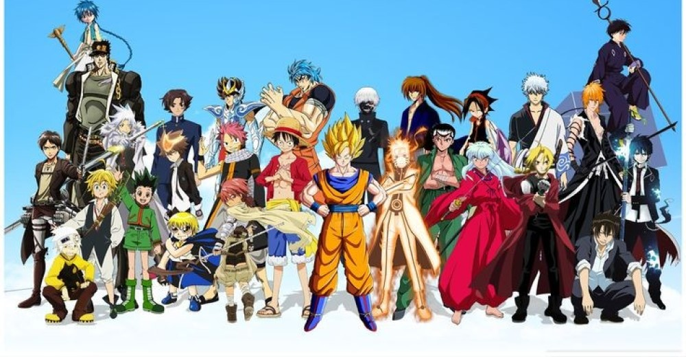
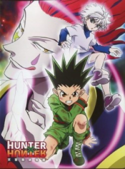
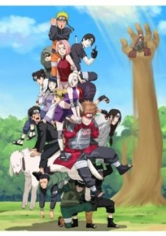

A série conta a história de Gon Freecss, um garoto de 12 anos que pretende se tornar um Hunter, um caçador de tesouros, lugares perdidos e criaturas estranhas. Contudo, ao contrário da maioria dos Hunters que procuram fama e dinheiro, o herói da história tem uma motivação maior para querer ser um caçador – encontrar seu pai – um dos mais famosos hunters do mundo. Mas não é qualquer um que pode se tornar um Hunter. Para poder praticar essa reconhecida profissão, é necessário ter uma licença especial – e para tirá-la é preciso passar – e sobreviver – a exames com milhares de inscritos. Uma vez aprovado e com sua licença Hunter em mãos, o caçador passa a ter direito a acessar áreas restritas, informações secretas e consegue acumular facilmente uma grande fortuna de acordo com seus feitos ? incluindo ir atrás de Hunters que usam seus poderes para objetivos escusos.
Top 3 Melhores animes do Mundo:
Por: David Marcos
Atualizado: 06/10/2020
3º - Hunter x Hunter (2011/2014)
2º - Naruto (2002/2017)
Naruto é um jovem órfão habitante da Vila da Folha que sonha se tornar o quinto Hokage, o maior guerreiro e governante da vila. Ao se graduar como ninja, descobre que tem um demônio raposa selado dentro de si. Seu pai, o quarto Hokage, aprisionou a raposa no próprio filho quando a raposa ameaçava destruir a Vila da Folha, sacrificando assim a própria vida. Agora Naruto vai contar com a ajuda dos colegas Sakura e Sasuke e do professor dos três, Kakashi Hatake, para perseguir seu sonho e deter os ninjas que planejam fazer mal á sua cidade.
1º - One piece (1999/???)

Gol D. Roger era conhecido como o Rei dos Piratas. Ele conquistou tudo na vida: fortuna, fama e poder. Suas últimas palavras antes de ser executado inspiraram homens do mundo inteiro a se lançarem ao mar : "O meu tesouro? Podem ficar com ele, se quiserem... Mas vão ter que procurá-lo. Deixei tudo naquele lugar!". E assim Roger criou a Grande Era dos Piratas. Passados 22 anos, um garoto chamado Monkey D. Luffy, usuário da Gomu Gomu no Mi, parte em busca do seu sonho: achar o One Piece e se tornar o Rei dos Piratas, que é o título da pessoa que vai conquistar o mundo. Luffy terá de juntar uma tripulação forte no East Blue, o mar mais fraco de todos. Aparecerão muitos inimigos poderosos em seu caminho.